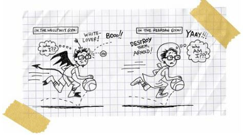
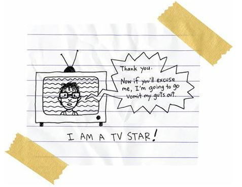

In Like a Lion
I’d never guessed I’d be a good basketball player.
I mean, I’d always loved ball, mostly because my father loved it so much, and because Rowdy loved it even more, but I figured I’d always be one of those players who sat on the bench and cheered his bigger, faster, more talented teammates to victory and/or defeat.
But somehow or another, as the season went on, I became a freshman starter on a varsity basketball team. And, sure, all of my teammates were bigger and faster, but none of them could shoot like me.
I was the hired gunfighter.
Back on the rez, I was a decent player, I guess. A rebounder and a guy who could run up and down the floor without tripping. But something magical happened to me when I went to Reardan.
Overnight, I became a good player.
I suppose it had something to do with confidence. I mean, I’d always been the lowest Indian on the reservation totem pole—I wasn’t expected to be good so I wasn’t. But in Reardan, my coach and the other players wanted me to be good. They needed me to be good. They expected me to be good. And so I became good.
I wanted to live up to expectations.
I guess that’s what it comes down to.
The power of expectations.
And as they expected more of me, I expected more of myself, and it just grew and grew until I was scoring twelve points a game.
AS A FRESHMAN!
Coach was thinking I would be an all-state player in a few years. He was thinking maybe I’d play some small-college ball.
It was crazy.
How often does a reservation Indian kid hear that?
How often do you hear the words “Indian” and “college” in the same sentence? Especially in my family. Especially in my tribe.
But don’t think I’m getting stuck up or anything.
It’s still absolutely scary to play ball, to compete, to try to win.
I throw up before every game.
Coach said he used to throw up before games.
“Kid,” he said, “some people need to clear the pipes before they can play. I used to be a yucker. You’re a yucker Ain’t nothing wrong with being a yucker.”
So I asked Dad if he used to be a yucker.
“What’s a yucker?” he asked.
“Somebody who throws up before basketball games,” I said.
“Why would you throw up?”
“Because I’m nervous.”
“You mean, because you’re scared?”
“Nervous, scared, same kind of things, aren’t they?”
“Nervous means you want to play. Scared means you don’t want to play.”
All right, so Dad made it clear.
I was a nervous yucker in Reardan. Back in Wellpinit, I was a scared yucker.
Nobody else on my team was a yucker. Didn’t matter one way or the other, I guess. We were just a good team, period.
After losing our first game to Wellpinit, we won twelve in a row. We just killed people, winning by double figures every time. We beat our archrivals, Davenport, by thirty-three.
Townspeople were starting to compare us to the great Reardan teams of the past. People were starting to compare some of our players to great players of the past.
Roger, our big man, was the new Joel Wetzel.
Jeff, our point guard, was the new Little Larry Soliday.
James, our small forward, was the new Keith Schulz.
But nobody talked about me that way. I guess it was hard to compare me to players from the past. I wasn’t from the town, not originally, so I would always be an outsider.
And no matter how good I was, I would always be an Indian. And some folks just found it difficult to compare an Indian to a white guy. It wasn’t racism, not exactly. It was, well, I don’t know what it was.
I was something different, something new. I just hope that, twenty years in the future, they’d be comparing some kid to me:
“Yeah, you see that kid shoot, he reminds me so much of Arnold Spirit.”
Maybe that will happen. I don’t know. Can an Indian have a legacy in a white town? And should a teenager be worried about his fricking legacy anyway?
Jeez, I must be an egomaniac.
Well, anyway, our record was 12 wins and 1 loss when we had our rematch with Wellpinit.
They came to our gym, so I wasn’t going to get burned at the stake. In fact, my white fans were going to cheer for me like I was some kind of crusading warrior:

Jeez, I felt like one of those Indian scouts who led the U.S. Cavalry against other Indians.
But that was okay, I guess. I wanted to win. I wanted revenge. I wasn’t playing for the fans. I wasn’t playing for the white people. I was playing to beat Rowdy.
Yep, I wanted to embarrass my best friend.
He’d turned into a stud on his team. He was only a freshman, too, but he was averaging twenty-five points a game. I followed his progress in the sports section.
He’d led the Wellpinit Redskins to a 13–0 record. They were the number one–ranked small school in the state. Wellpinit had never been ranked that high. And it was all because of Rowdy. We were ranked number two, so our game was a big deal. Especially for a small-school battle.
And most especially because I was a Spokane Indian playing against his old friends (and enemies).
A local news crew came out to interview me before the game.
“So, Arnold, how does it feel to play against your former teammates?” the sports guy asked me.
“It’s kind of weird,” I said.
“How weird?”
“Really weird.”
Yep, I was scintillating.
The sports guy stopped the interview.
“Listen,” he said. “I know this is a difficult thing. You’re young. But maybe you could get more specific about your feelings.”
“My feelings?” I asked.
“Yeah, this is a major deal in your life, isn’t it?”
Well, duh, yeah, of course it was a major deal. It was maybe the biggest thing in my life ever, but I wasn’t about to share my feelings with the whole world. I wasn’t going to start blubbering for the local sports guy like he was my priest or something.
I had some pride, you know?
I believed in my privacy.
It wasn’t like I’d called the guy and offered up my story, you know?
And I was kind of suspicious that white people were really interested in seeing some Indians battle each other. I think it was sort of like watching dogfighting, you know?
It made me feel exposed and primitive.
“So, okay,” the sports guy said. “Are you ready to try again?”
“Yeah.”
“Okay, let’s roll.”
The camera guy started filming.
“So, Arnold,” the sports guy said. “Back in December, you faced your old classmates, and fellow Spokane tribal members, in a basketball game back on the reservation, and you lost. They’re now the number one–ranked team in the state and they’re coming to your home gym. How does that make you feel?”
“Weird,” I said.
“Cut, cut, cut, cut,” the sports guy said. He was mad now.
“Arnold,” he said. “Could you maybe think of a word besides weird?”
I thought for a bit.
“Hey,” I said. “How about I say that it makes me feel like I’ve had to grow up really fast, too fast, and that I’ve come to realize that every single moment of my life is important. And that every choice I make is important. And that a basketball game, even a game between two small schools in the middle of nowhere, can be the difference between being happy and being miserable for the rest of my life.”
“Wow,” the sports guy said. “That’s perfect. That’s poetry. Let’s go with that, okay?”
“Okay,” I said.
“Okay, let’s roll tape,” the sports guy said again and put the microphone in my face.
“Arnold,” he said. “Tonight you’re going into battle against your former teammates and Spokane tribal members, the Wellpinit Redskins. They’re the number one–ranked team in the state and they beat you pretty handily back in December. Some people think they’re going to blow you out of the gym tonight. How does that make you feel?”
“Weird,” I said.
“All right, all right, that’s it,” the sports guy said. “We’re out of here.”
“Did I say something wrong?” I asked.
“You are a little asshole,” the sports guy said.
“Wow, are you allowed to say that to me?”
“I’m just telling the truth.”
He had a point there. I was being a jerk.
“Listen, kid,” the sports guy said. “We thought this was an important story. We thought this was a story about a kid striking out on his own, about a kid being courageous, and all you want to do is give us grief.”
Wow.
He was making me feel bad.
“I’m sorry,” I said. “I’m just a yucker.”
“What?” the sports guy asked.
“I’m a nervous dude,” I said. “I throw up before games. I think I’m just sort of, er, metaphorically throwing up on you. I’m sorry. The thing is, the best player on Wellpinit, Rowdy, he used to be my best friend. And now he hates me. He gave me a concussion that first game. And now I want to destroy him. I want to score thirty points on him. I want him to remember this game forever.”
“Wow,” the sports guy said. “You’re pissed.”
“Yeah, you want me to say that stuff on camera?”
“Are you sure you want to say that?”
“Yeah.”
“All right, let’s go for it.”
They set up the camera again and the sports guy put the microphone back in my face.
“Arnold, you’re facing off against the number one–ranked Wellpinit Redskins tonight and their all-star, Rowdy, who used to be your best friend back when you went to school on the reservation. They beat you guys pretty handily back in December, and they gave you a concussion. How does it feel to be playing them again?”
“I feel like this is the most important night of my life,” I said. “I feel like I have something to prove to the people in Reardan, the people in Wellpinit, and to myself.”
“And what do you think you have to prove?” the guy asked.
“I have to prove that I am stronger than everybody else. I have to prove that I will never give up. I will never quit playing hard. And I don’t just mean in basketball. I’m never going to quit living life this hard, you know? I’m never going to surrender to anybody. Never, ever, ever.”
“How bad do you want to win?”
“I never wanted anything more in my life.”
“Good luck, Arnold, we’ll be watching.”
The gym was packed two hours before the game. Two thousand people yelling and cheering and stomping.
In the locker room, we all got ready in silence. But everybody, even Coach, came up to me and patted my head or shoulder, or bumped fists with me, or gave me a hug.
This was my game, this was my game.
I mean, I was still just the second guy off the bench, just the dude who provided instant offense. But it was all sort of warrior stuff, too.

We were all boys desperate to be men, and this game would be a huge moment in our transition.
“Okay, everybody, let’s go over the game plan,” Coach said.
We all walked over to the chalkboard area and sat on folding chairs.
“Okay, guys,” Coach said. “We know what these guys can do. They’re averaging eighty points a game. They want to run and run and run. And when they’re done running and gunning, they’re going to run and gun some more.”
Man, that wasn’t much of a pep talk. It sounded like Coach was sure we were going to lose.
“And I have to be honest, guys,” Coach said. “We can’t beat these guys with our talent. We just aren’t good enough. But I think we have bigger hearts. And I think we have a secret weapon.”
I wondered if Coach had maybe hired some Mafia dude to take out Rowdy.
“We have Arnold Spirit,” Coach said.
“Me?” I asked.
“Yes, you,” Coach said. “You’re starting tonight.”
“Really?”
“Really. And you’re going to guard Rowdy. The whole game. He’s your man. You have to stop him. If you stop him, we win this game. It’s the only way we’re going to win this game.”
Wow. I was absolutely stunned. Coach wanted me to guard Rowdy. Now, okay, I was a great shooter, but I wasn’t a great defensive player. Not at all. There’s no way I could stop Rowdy. I mean, if I had a baseball bat and bulldozer, maybe I could stop him. But without real weapons—without a pistol, a man-eating lion, and a vial of bubonic plague—I had zero chance of competing directly with Rowdy. If I guarded him, he was going to score seventy points.
“Coach,” I said. “I’m really honored by this. But I don’t think I can do it.”
He walked over to me, kneeled, and pushed his forehead against mine. Our eyes were, like, an inch apart. I could smell the cigarettes and chocolate on his breath.
“You can do it,” Coach said.
Oh, man, that sounded just like Eugene. He always shouted that during any game I ever played. It could be, like, a three-legged sack race, and Gene would be all drunk and happy in the stands and he’d be shouting out, “Junior, you can do it!”
Yeah, that Eugene, he was a positive dude even as an alcoholic who ended up getting shot in the face and killed.
Jeez, what a sucky life. I was about to play the biggest basketball game of my life and all I could think about was my dad’s dead best friend.
So many ghosts.
“You can do it,” Coach said again. He didn’t shout it. He whispered it. Like a prayer. And he kept whispering again. Until the prayer turned into a song. And then, for some magical reason, I believed in him.
Coach had become, like, the priest of basketball, and I was his follower. And I was going to follow him onto the court and shut down my best friend.
I hoped so.
“I can do it,” I said to Coach, to my teammates, to the world.
“You can do it,” Coach said.
“I can do it.”
“You can do it.”
“I can do it.”
Do you understand how amazing it is to hear that from an adult? Do you know how amazing it is to hear that from anybody? It’s one of the simplest sentences in the world, just four words, but they’re the four hugest words in the world when they’re put together.
You can do it.
I can do it.
Let’s do it.
We all screamed like maniacs as we ran out of the locker room and onto the basketball court, where two thousand maniac fans were also screaming.
The Reardan band was rocking some Led Zeppelin.
As we ran through our warm-up layup drills, I looked up into the crowd to see if my dad was in his usual place, high up in the northwest corner. And there he was. I waved at him. He waved back.
Yep, my daddy was an undependable drunk. But he’d never missed any of my organized games, concerts, plays, or picnics. He may not have loved me perfectly, but he loved me as well as he could.
My mom was sitting in her usual place on the opposite side of the court from Dad.
Funny how they did that. Mom always said that Dad made her too nervous; Dad always said that Mom made him too nervous.
Penelope was yelling and screaming like crazy, too.
I waved at her; she blew me a kiss.
Great, now I was going to have to play the game with a boner.
Ha-ha, just kidding.
So we ran through layups and three-on-three weave drills and free throws and pick and rolls, and then the evil Wellpinit five came running out of the visitors’ locker room.
Man, you never heard such booing. Our crowd was as loud as a jet.
They were just pitching the Wellpinit players some serious crap.
You want to know what it sounded like?
It sounded like this:
BOOOOOOOOOOOOOOOOOOOOOOOOOOOOOOOOOOOOOOOOOOOOOOO
OOOOOOOOOOOOOOOOOOOOOOOOOOOOOOOOOOOOOOOOOOOOOOOOOOO
OOOOOOOOOOOOOOOOOOOOOOOOOOOOOOOOOOOOOOOOOOOOOOOOOOOOOOO!
We couldn’t even hear each other.
I worried that all of us were going to have permanent hearing damage.
I kept glancing over at Wellpinit as they ran their layup drills. And I noticed that Rowdy kept glancing over at us.
At me.
Rowdy and I pretended that we weren’t looking at each other. But, man, oh, man, we were sending some serious hate signals across the gym.
I mean, you have to love somebody that much to also hate them that much, too.
Our captains, Roger and Jeff, ran out to the center circle to have the game talk with the refs.
Then our band played “The Star-Spangled Banner.”
And then our five starters, including me, ran out to the center circle to go to battle against Wellpinit’s five.
Rowdy smirked at me as I took my position next to him.
“Wow,” he said. “You guys must be desperate if you’re starting.”
“I’m guarding you,” I said.
“What?”
“I’m guarding you tonight.”
“You can’t stop me. I’ve been kicking your ass for fourteen years.”
“Not tonight,” I said. “Tonight’s my night.”
Rowdy just laughed.
The ref threw up the opening jump ball.
Our big guy, Roger, tipped it back toward our point guard, but Rowdy was quicker. He intercepted the pass and raced toward his basket. I ran right behind him. I knew that he wanted to dunk it. I knew that he wanted to send a message to us.
I knew he wanted to humiliate us on the opening play.
And for a second, I wondered if I should just intentionally foul him and prevent him from dunking. He’d get two free throws but those wouldn’t be nearly as exciting as a dunk.
But, no, I couldn’t do that. I couldn’t foul him. That would be like giving up. So I just sped up and got ready to jump with Rowdy.
I knew he’d fly into the air about five feet from the hoop. I knew he’d jump about two feet higher than I could. So I needed to jump quicker.
And Rowdy rose into the air. And I rose with him.
AND THEN I ROSE ABOVE HIM!
Yep, if I believed in magic, in ghosts, then I think maybe I was rising on the shoulders of my dead grandmother and Eugene, my dad’s best friend. Or maybe I was rising on my mother and father’s hopes for me.
I don’t know what happened.
But for once, and for the only time in my life, I jumped higher than Rowdy.
I rose above him as he tried to dunk it.
I TOOK THE BALL RIGHT OUT OF HIS HANDS!
Yep, we were, like, ten feet off the ground, but I was still able to reach out and steal the ball from Rowdy.
Even in midair, I could see the absolute shock on Rowdy’s face. He couldn’t believe I was flying with him.
He thought he was the only Indian Superman.
I came down with the ball, spun, and dribbled back toward our hoop. Rowdy, screaming with rage, was close behind me.
Our crowd was insanely loud.
They couldn’t believe what I’d just done.
I mean, sure, that kind of thing happens in the NBA and in college and in the big high schools. But nobody jumped like that in a small school basketball gym. Nobody blocked a shot like that.
NOBODY TOOK A BALL OUT OF A GUY’S HANDS AS HE WAS JUST ABOUT TO DUNK!
But I wasn’t done. Not by a long shot. I wanted to score. I’d taken the ball from Rowdy and now I wanted to score in his face. I wanted to absolutely demoralize him.
I raced for our hoop.
Rowdy was screaming behind me.
My teammates told me later that I was grinning like an idiot as I flew down the court.
I didn’t know that.
I just knew I wanted to hit a jumper in Rowdy’s face.
Well, I wanted to dunk on him. And I figured, with the crazy adrenaline coursing through my body, I might be able to jump over the rim again. But I think part of me knew that I’d never jump like that again. I only had that one epic jump in me.
I wasn’t a dunker; I was a shooter.
So I screeched to a stop at the three-point line and head-faked. And Rowdy completely fell for it. He jumped high over me, wanting to block my shot, but I just waited for the sky to clear. As Rowdy hovered above me, as he floated away, he looked at me. I looked at him.
He knew he’d blown it. He knew he’d fallen for a little head-fake. He knew he could do nothing to stop my jumper.
He was sad, man.
Way sad.
So guess what I did?
I stuck my tongue out at him. Like I was Michael Jordan.
I mocked him.
And then I took my three-pointer and buried it. Just swished that sucker.
AND THE GYM EXPLODED!
People wept.
Really.
My dad hugged the white guy next to him. Didn’t even know him. But hugged and kissed him like they were brothers, you know?
My mom fainted. Really. She just leaned over a bit, bumped against the white woman next to her, and was gone.
She woke up five seconds later.
People were up on their feet. They were high-fiving and hugging and dancing and singing.
The school band played a song. Well, the band members were all confused and excited, so they played a song, sure, but each member of the band played a different song.
My coach was jumping up and down and spinning in circles.
My teammates were screaming my name.
Yep, all of that fuss and the score was only 3 to 0.
But, trust me, the game was over.
It only took, like, ten seconds to happen. But the game was already over. Really. It can happen that way. One play can determine the course of a game. One play can change your momentum forever.
We beat Wellpinit by forty points.
Absolutely destroyed them.
That three-pointer was the only shot I took that night. The only shot I made.
Yep, I only scored three points, my lowest point total of the season.
But Rowdy only scored four points.
I stopped him.
I held him to four points.
Only two baskets.
He scored on a layup in the first quarter when I tripped over my teammate’s foot and fell.
And he scored in the fourth quarter, with only five seconds left in the game, when he stole the ball from me and raced down for a layup.
But I didn’t even chase him down because we were ahead by forty-two points.
The buzzer sounded. The game was over. We had killed the Redskins. Yep, we had humiliated them.
We were dancing around the gym, laughing and screaming and chanting.
My teammates mobbed me. They lifted me up on their shoulders and carried me around the gym.
I looked for my mom, but she’d fainted again, so they’d taken her outside to get some fresh air.
I looked for my dad.
I thought he’d be cheering. But he wasn’t. He wasn’t even looking at me. He was all quiet-faced as he looked at something else.
So I looked at what he was looking at.
It was the Wellpinit Redskins, lined up at their end of the court, as they watched us celebrate our victory.
I whooped.
We had defeated the enemy! We had defeated the champions! We were David who’d thrown a stone into the brain of Goliath!
And then I realized something.
I realized that my team, the Reardan Indians, was Goliath.
I mean, jeez, all of the seniors on our team were going to college. All of the guys on our team had their own cars. All of the guys on our team had iPods and cell phones and PSPs and three pairs of blue jeans and ten shirts and mothers and fathers who went to church and had good jobs.
Okay, so maybe my white teammates had problems, serious problems, but none of their problems was life threatening.
But I looked over at the Wellpinit Redskins, at Rowdy.
I knew that two or three of those Indians might not have eaten breakfast that morning.
No food in the house.
I knew that seven or eight of those Indians lived with drunken mothers and fathers.
I knew that one of those Indians had a father who dealt crack and meth.
I knew two of those Indians had fathers in prison.
I knew that none of them was going to college. Not one of them.
And I knew that Rowdy’s father was probably going to beat the crap out of him for losing this game.
I suddenly wanted to apologize to Rowdy, to all of the other Spokanes.
I was suddenly ashamed that I’d wanted so badly to take revenge on them.
I was suddenly ashamed of my anger, my rage, and my pain.
I jumped off my white teammates’ shoulders and dashed into the locker room. I ran into the bathroom, into a toilet stall, and threw up.
And then I wept like a baby.
Coach and my teammates thought I was crying tears of happiness.
But I wasn’t.
I was crying tears of shame.
I was crying because I had broken my best friend’s heart.
But God has a way of making things even out, I guess.
Wellpinit never recovered from their loss to us. They only won a couple more games the rest of the season and didn’t qualify for the playoffs.
However, we didn’t lose another game in the regular season and were ranked number one in the state as we headed into the playoffs.
We played Almira Coulee-Hartline, this tiny farm-town team, and they beat us when this kid named Keith hit a crazy half-court shot at the buzzer. It was a big upset.
We all cried in the locker room for hours.
Coach cried, too.
I guess that’s the only time that men and boys get to cry and not get punched in the face.